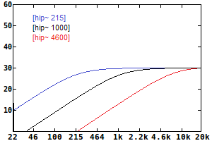
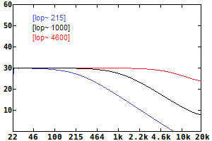
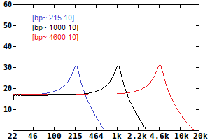
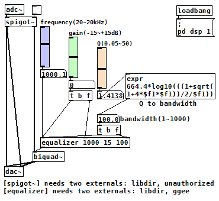

各種フィルター/パラメトリックイコライザ（Pure Data パッチ）
2017年09月16日 カテゴリー：Pure Data
Pure Data(Pd)で簡単に使えるフィルターとしては[hip~][lop~][bp~]があります。それぞれの特性を下図に示します。
|  | ＜[hip~] ハイパスフィルター(HPF)＞ カットオフ周波数を高くした場合は微妙に効きが鋭くなっているようです。ただ高いカットオフ周波数に設定することはあまりなさそうなので、実用上問題ないと思います。 |
|  | ＜[lop~] ローパスフィルター(LPF)＞ カットオフ周波数を高くすると効きが悪くなり、7020Hz以上に設定するとフィルターが無効となってしまいます（44100サンプリング時）。→こちらのメールアーカイブに詳細が載っています。 代替手段としては、後述の[biquad~][rpole~]等のフィルターを用いるしかないと思われます。 |
|  | ＜[bp~] バンドパスフィルター(BPF)＞ 変な特性に見えますが、縦軸をdB、横軸（周波数）を対数表示にするとこのような形なります。ワウ等の中心周波数を揺らすエフェクトの場合は、[vcf~]を使います。 |
＜その他のフィルターオブジェクト＞
[biquad~][rpole~][cpole~]等のフィルターがありますが、数値の計算が複雑なため、外部ライブラリ「ggee」に頼ることにします。[biquad~]用係数計算オブジェクト8種類（[bandpass][equalizer][highpass][highshelf][hlshelf][lowpass][lowshelf][notch]）が使用可能になります。
例として[equalizer]を利用したパラメトリックイコライザを作りました。[equalizer]のヘルプファイルとほぼ同じですが、Q値を帯域幅（1オクターブ＝100）に変換する式を入れています。
（このパッチをダウンロード）